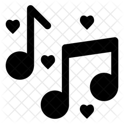

About Me
William Chan's Social Media Links
LinkedInGitHub
Medium
My Background
Photo by PNGAll, licensed under Creative Commons Attribution 2.0 Generic (CC BY 2.0).
My name is William Chan. I am a 19 years old freshman attending NYU in Steinhardt, majoring in Education Studies. I was born on March 2nd, 2002 in Brooklyn, New York, United States. I am of Chinese ethnicity, as both my parents were from China (Guangdong). I am proud of both my American nationality and Chinese heritage and love being a Chinese-American here in the United States.

Photo by NewYorkBuzz, licensed under Creative Commons Attribution 2.0 Generic (CC BY 2.0).
This is my home residence city, New York City, pictured above. It's where I've lived my whole life and is also where NYU is located. I went to primary school (P.S.1) here as well as middle school (I.S. 187) and also high school (M475). I rarely leave this city!
My Interests
Photo by Runner's World, licensed under Creative Commons Attribution 2.0 Generic (CC BY 2.0).
I enjoy running, although I haven't ran too much lately in 2021 or 2020 due to laziness. I run outside but a treadmill tends to be better on my knees.
Photo by Iconscout, licensed under Creative Commons Attribution 2.0 Generic (CC BY 2.0).
I like music and all forms of related auditory arts. I ocassionally play the piano and like singing, although I'm not very good at these activities.
Photo by Calm Mind Project, licensed under Creative Commons Attribution 2.0 Generic (CC BY 2.0).
I enjoy learning about the human mind, specifically the science of thinking. I try to meditate (with little success) and one of my passions is attempting to decipher and understand the causes of emotions and poor mental health.